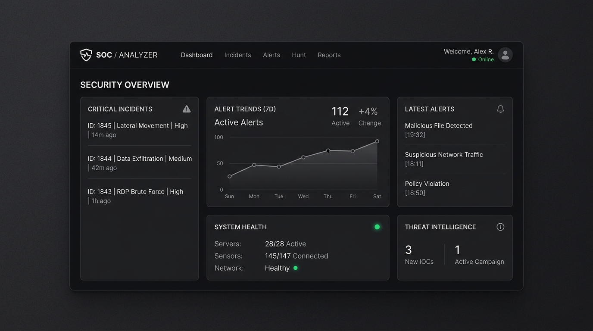

CYB 101
Network Defense
Linux
SOC Incident & Network Threat Analyzer
A defensive security telemetry dashboard simulating intrusion alerts, malicious IP packet filtering, and system health metrics for enterprise networks.